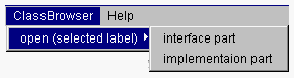

クラスのインタフェースを照会する
クラスのインタフェースとは、クラス宣言の中で他のクラスに公開されている部分のことです。OZではこれに識別子（=クラスのインタフェース識別子）を付与して管理しています。識別子でクラスを指定します。
クラスのインタフェースを照会する方法は3種類あります。
- スクールブラウザの ClassBrowser メニューから interface part サブメニュー項目を選択する方法
- 現在開かれているクラスブラウザの System メニューから open メニュー項目を選択する方法
- 照会したいクラスが現在開かれているクラスブラウザに表示されている場合には、その識別子が表示されているエリアをダブルクリックで照会できます。

スクールブラウザからの照会
- １．スクールブラウザのSubject:メニューリストに表示されているクラスの情報を知りたい場合には、メニューリストからそのクラスをクリックしてClassBrowser
メニューから interface part サブメニュー項目を選択してください。

クラスブラウザが新規に開かれ、そのクラスのインタフェース部が表示されます。

クラスブラウザからの照会
- 現在開かれているクラスブラウザにクラス識別子が表示されている場合にはそのダブルクリックでその識別子の情報を表示するクラスブラウザが開きます。
そのクラスのインタフェース情報を照会する
- クラスの情報を表示するクラスブラウザの場合には、interface class表示エリアをダブルクリックすると、そのクラスのインタフェース部を照会できます。

（interface class表示エリアをダブルクリックすると、そのクラスのインタフェース部を照会できます。）
クラスブラウザのSystemメニュー
- １．現在開かれているクラスブラウザやスクールブラウザに表示されていないクラスの情報を知りたい場合には、そのクラスの識別子を指定してクラスブラウザを開いてください。
クラスブラウザの System メニューから open メニュー項目を選択します。
クラスの識別子を入力するためのダイアログが表示されます。
- クラスのインタフェース部識別子を入力しOKボタンをクリックすると、クラスブラウザが新規に開かれ、指定クラスインタフェース部が表示されます。
(c) 1996-1998 IPA, ETL, AT21, FSIABC, FXIS,
InArc, MRI, NUL, SBC, Sharp, TEC, TIS. All rights reserved.